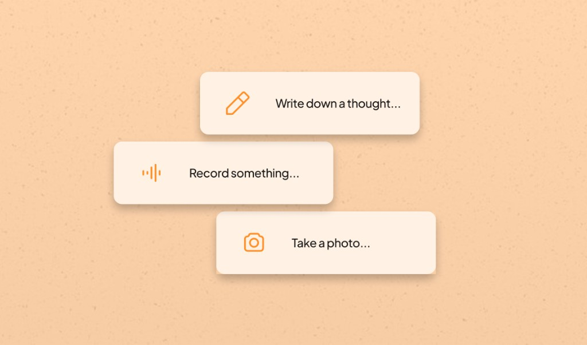
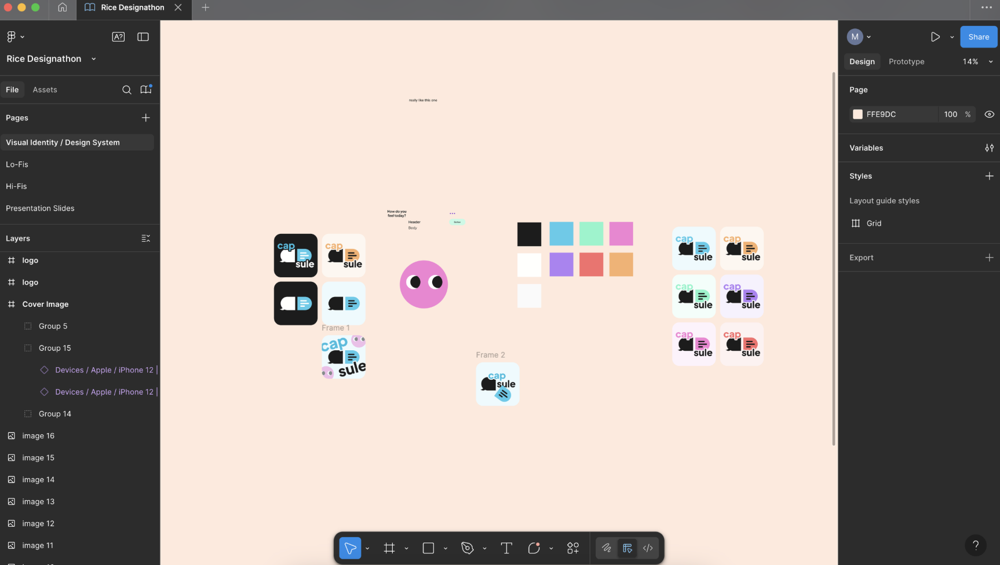

Rice-Design-a-Thon · 2025
Capsule
A digital journaling app built around the hunter-gatherer metaphor — forage for moments when prompted, sort them into capsules, and revisit your harvest. Writing now feels like gathering, where entries can grow into more than just text memos.

Context
Capsule is a digital journaling app built around the concept of a hunter-gatherer. You don’t keep a diary on a schedule, but forage for moments when prompted and seal them into capsules to revisit later.
I worked with a team of three other designers, where I owned product and visual design, as well as user research.
DESIGNATHON PROMPT:
How can we stay human with AI?
Our answer: the ability to create and cherish memories and emotions.
This was closely tied to traditional journaling and scrapbooking-- but what was a problem centered around this that we wanted to solve with AI?
Problem
We framed the problem around why people abandon journaling apps after the first week.
- Low friction Capture in seconds so logging doesn’t depend on a “perfect” moment
- Meaningful & personalized Make journaling feel rewarding by offering personalized touches like entry summaries
Discovery
We conducted a survey of college students across different schools.
- Quick capture that accepts anything — video, audio, photo, or text — with the touch of a button
- Capsules as bounded collections (weekly, thematic, or ad hoc) so reviewing feels like opening a personal box, not just searching chronologically
Solutions
Design system

Demo

Features
- Onboarding flow Engages and personalizes the journaling experience from the start
- Event card Users can create capsules from existing entries to build an overview
- Text, voice, or photo entry Multimodal capture so people can log in whatever format fits the moment
- Landing capture Text, voice, or photo entries from the landing page — low friction at the first touch
- Capsule recaps Summaries of usage that users can share with friends
Outcome
We won first place out of 110 groups!
Reflection
This was my first time working on a team with only designers.
What I learned
- How to leverage the skills of other designers
- Working under a tight timeline means prioritizing certain features
- Storytelling is as crucial to your app as the design